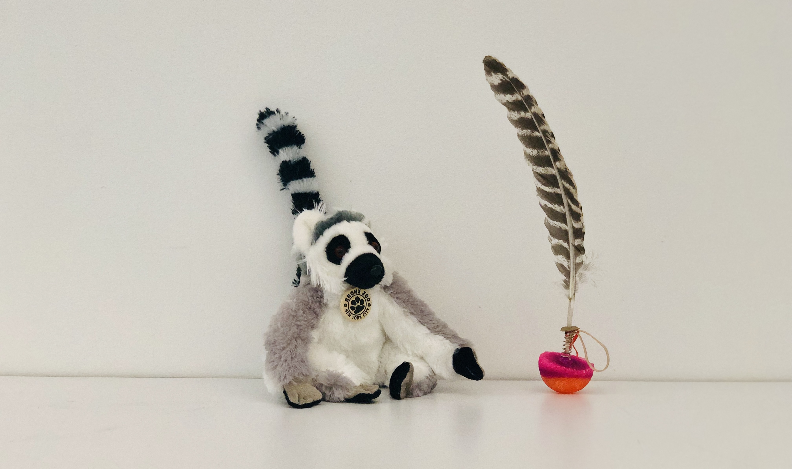

Week 11
Final Proposal
Big Idea: to continue researching on Ring-tailed Lemurs, and to proposal three different types of Enrichment or Empathy projects that contribute to their wellfare and wellbeing.
Animal: Ring-tailed Lemur
Lemur Play tail: a tail that mimics Ring-tailed lemurs’ look and locomotion and incites playful acts and chasing among them.
Ring-tailed Lemur’s tail is the most symbolic identification as it is more than twice as long as their body. In an environment where their tiny bodies can be easily camouflaged. One tail that erects or shoots into the sky while moving around becomes the flag that gives signals to their buddies of their location and direction for follow. Just like human waving at each other, Ring-tailed lemurs use their tails to greet. They also compare each others’ tails to show power and incite playful acts or even stink fights with it. The play tail is an artificial tail that transforms its shape and mimics Ring-tailed lemurs’ tail-locomotion. It can be placed anywhere in the space or be thrown to the sky. It will land on the ground safely and even bounce to other spots like how lemurs would.

The tail: (observed at the Bronx Zoo)

Prototype1:
The idea for this concept is to make a Roly-Poly tail toy that mimics how ring-tailed lemurs travel and move around in the field, so they can chase after or follow. The basic function of the roly-poly tail will allow the tail to wobble in the air when being dropped and always be able to erect on its own. The advanced version of it will be having the rubber band(string) attached to a vibrator or a servo motor that would change the movement of the tail(to be developed).
Behind the scene: I made my own rubber bouncy ball attached at the bottom. A Compression spring is attached between the artificial tail and the heavy bottom. Ideally, the compression spring will have a bigger effect in the later process(to be developed) that should enable the device to shoot up itself.
Next Step:
the rubble band will be attached tightly to its full tension state. Then based on further findings about how RLM's tails will behave in specific ways, a vibrator or a servo motor can be attached
to the rubber bands, which will create motion to the tail.
Side Note:
I got feedback from Meg Dye from the Duke Lemur Center:
will post soon